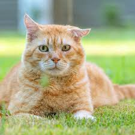

Juntos salvamos vidas.
Adote Lar
Conectando ONGs e abrigos a lares cheios de amor. Juntos, reduzimos o abandono e salvamos vidas oferecendo um teto temporário.
Como você pode ajudar?
Escolha seu perfil e comece a transformar realidades hoje.
Voluntários
Explore a vitrine de animais, solicite o acolhimento temporário e atualize o status do pet sob seus cuidados. Sua casa pode ser o primeiro passo para um final feliz.
ONGs e abrigos
Cadastre e faça a gestão dos animais resgatados, aprove novos lares temporários e acompanhe o status de cada pet. Organize sua rede de apoio com eficiência.
Como funciona?
Um processo simples e seguro para conectar quem precisa de ajuda com quem quer ajudar.
1. Cadastre-se
Crie seu perfil na plataforma como voluntário ou representante de uma ONG.
2. Conecte-se
Encontre um pet que precisa de abrigo ou anuncie um novo resgate para a rede.
3. Salve uma vida
Formalize o lar temporário através da plataforma e acompanhe a jornada do pet.
ONGs Parceiras
Conheça as organizações que já utilizam nossa rede de acolhimento.
Amigo Fiel
Resgatando e reabilitando cães abandonados para encontrar novos lares cheios de amor.
Pata Amiga
Dedicada a salvar gatos de rua, oferecendo cuidados e buscando famílias responsáveis para adoção.
Lar dos Bichos
Acolhendo animais em situação de risco e promovendo campanhas de adoção consciente.
Alguns amiguinhos esperando por você
Conheça os animais que precisam urgentemente de um lar temporário.
Max
Cachorro

Mali
Gata
Pronto para fazer a diferença?
Milhares de animais precisam de um lar agora mesmo. Junte-se à nossa comunidade e ajude-nos a transformar o futuro do acolhimento animal no Brasil.